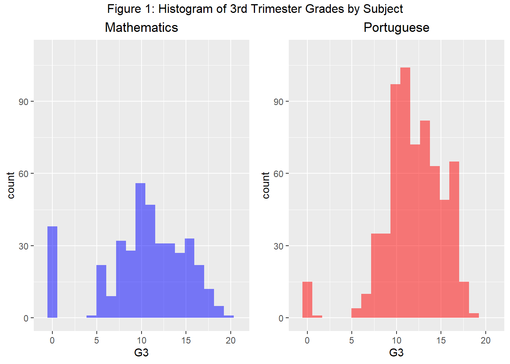

Final_Project_Paper
Data Description
We obtained the two datasets from the UC Irvine Machine Learning Repository (UCIMLR). They were donated by authors, Paulo Cortez and Alice Silva, of the article “Using Data Mining to Predict Secondary School Student Performance”. The authors belong to the University of Minho in Portugal and were interested in model efficacy in the prediction of the academic performance of Portuguese secondary students.
Each dataset aligns with a single subject, Portuguese and Mathematics, collected from two Portuguese secondary schools. The Mathematics dataset contains 395 observations and the Portuguese contains 649. They both have 33 columns.
Three of the columns are trimester grades of students with the third trimester grade G3 taken as the student’s final grade. We will take this as our response and the previous two trimester grades as predictors. The remaining predictors consist of demographic survey data acquired for each student observation. These include number of absences, number of previous class failures, occupation of mother/father, etc. Most of the variables are categorical, taking ordinal and nominative values. There are also variables that take on binary and integer values. We will begin our analysis by visualizing the distribution of G3 for the Mathematics and Portuguese data set.
Figure 2 below provides examples of the predictors available in our dataset. (Full list available HERE) We will use all of these in our full linear model. Before creating such a model however, we will take time to analyze the relationship between G1, G2, absences, and failures with the response G3 to see if transformations of these variables are warranted. The other variables are categorical and do not offer obvious visual correlations with G3 that can inform our transformation choices.
Attaching package: 'flextable'The following object is masked from 'package:purrr':
composeThe following objects are masked from 'package:kableExtra':
as_image, footnoteThe following objects are masked from 'package:plotly':
highlight, stylePredictor | Description | Variable.Type | Possible.Values |
|---|---|---|---|
sex | student's gender | Binary | female or male |
age | student's age | Integer | 15-20 |